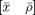
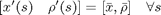
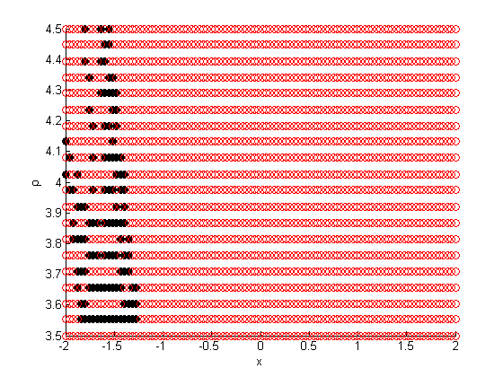

STATIONARY POLICIES
Stationary policy are consumption and labor choices for each state such that both the endogenous state variables x, \rho are constant at arbitrary but fixed values This script explores the numerical existence of stationary policies for a 3 shock process over a fixed grid. Given a $
the set of constraints to the BM are used to solve consumption and labor choices for both the agent such that the

In terms of accounting we are solving for 4 | S | unknowns (c1,c2,l1,l2) using 3|S|+1 equations (Implementability, Wage, Resource, Bond Euler Equation)
Contents
Old calibration
clc clear all close all warning off SetPath InitData=load('csigmaMed'); Para=InitData.Para;
Modify the shock process
3 shock process I extend the shock process to have g(3) which is 10percent higher than g(2)
Para.g=[Para.g max(Para.g)*1.1]; n=length(Para.g); NewPh=1/length(Para.g); Para.P=NewPh*ones(1,length(Para.g)-1); Para.P=[Para.P 1-sum(Para.P)];
Solve for the stationary policies along the grid
xGrid=linspace(-2,2); rhoGrid=Para.RGrid; options=optimset('Display','off'); zInit=ones(4*n,1)*.5; domainPolicyExists=[]; domainPolicy=[]; domainPolicyFail=[]; for xind=1:length(xGrid) for rhoind=1:length(rhoGrid) [z,res,exitflag]=fsolve(@(z) StationaryPolicyRes(z,xGrid(xind),rhoGrid(rhoind),Para),zInit,options); StationaryPolicy(xind,rhoind).exitflag=exitflag; StationaryPolicy(xind,rhoind).residuals=res; StationaryPolicy(xind,rhoind).z=z; if exitflag==1 zInit=z; domainPolicyExists=[ domainPolicyExists ;xGrid(xind) rhoGrid(rhoind)]; else domainPolicyFail=[ domainPolicyFail ;xGrid(xind) rhoGrid(rhoind)]; end domainPolicy=[ domainPolicy; [xGrid(xind) rhoGrid(rhoind)]]; end end
Results
scatter(domainPolicyFail(:,1),domainPolicyFail(:,2),'k','filled') hold on scatter(domainPolicyExists(:,1),domainPolicyExists(:,2),'r') xlabel('x') ylabel('\rho')
Remarks
The black dots are points in the domain where stationary policies did not exist. A good sign is that all these are with x <0 since the steady state (for the two shock case) always had x >0. Also as a check I used the 2 shock process and the existence of stationary policies fail more or less in the same region